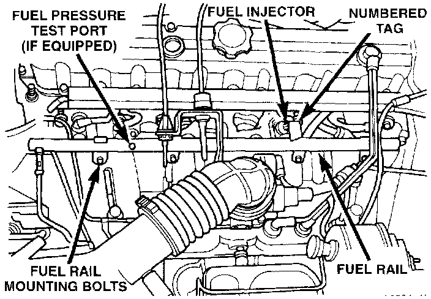

Fuel Rail: Service and Repair
FUEL INJECTOR RAIL REMOVALWARNING: The fuel system is under constant fuel pressure even with the engine off this pressure must be released before servicing the fuel rail.
1. Remove fuel tank filler tube cap.
2. Disconnect the negative battery cable from battery.
3. Perform the Fuel System Pressure Release Procedure.
Fig. 35 Fuel Rail Mounting:

4. Remove and numerically attach a tag (if fuel injector is not already tagged), the injector harness connectors. Do this at each injector (Fig. 35).
5. Disconnect fuel supply line latch clip and fuel line at fuel rail.
6. Remove fuel rail mounting bolts (Fig. 35).
7. Remove cable mounting bracket and cables at intake manifold.
8. Remove fuel rail by gently rocking until all the fuel injectors are out of the intake manifold.
INSTALLATION
1. Apply a small amount of clean engine oil to each injector o-ring. This will aid in installation.
2. Position tips of all fuel injectors into the corresponding injector bore in the intake manifold. Seat injectors into manifold.
3. Tighten fuel rail mounting bolts to 27 Nm (20 ft. lbs.) torque.
4. Install cable mounting bracket and cables to intake manifold.
5. Connect injector harness connectors to appropriate (tagged) injector.
6. Connect fuel line and fuel line latch clip to fuel rail.
7. Install protective cap to pressure test port fitting (if equipped).
8. Install fuel tank cap.
9. Connect negative battery cable to battery.
10. Start engine and check for fuel leaks.